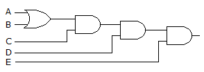
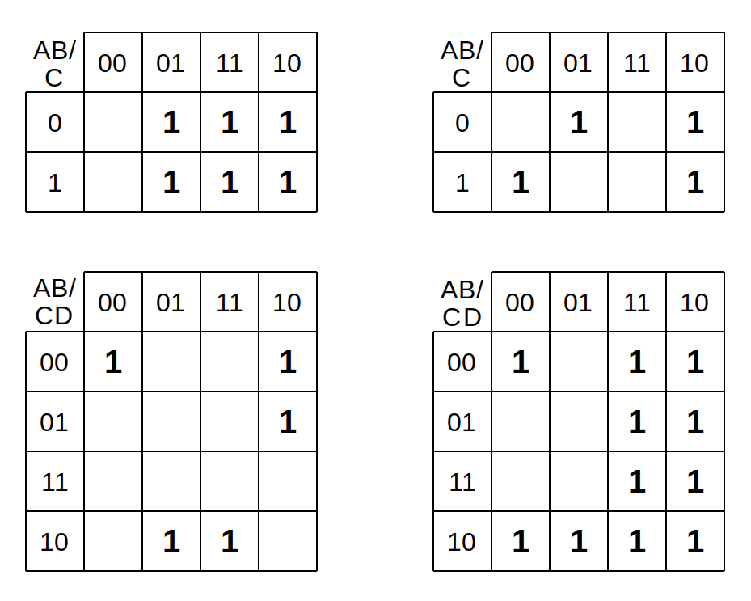

Álgebra Booleana - 1¶
 Resolução
ResoluçãoIndique o nome dos elementos lógicos a seguir:¶

Tabela verdade¶
- A tabela verdade a seguir representa qual porta lógica?
| A | B | OUT |
|---|---|---|
| 0 | 0 | 0 |
| 0 | 1 | 1 |
| 1 | 0 | 1 |
| 1 | 1 | 0 |
- A tabela verdade a seguir representa qual porta lógica?
| A | B | OUT |
|---|---|---|
| 0 | 0 | 1 |
| 0 | 1 | 1 |
| 1 | 0 | 1 |
| 1 | 1 | 0 |
\newpage
Aplicando a lei da Distributividade na expressão A(B+\bar{C}+D) se tem:¶
- A . B + A . C + A . D
- A . B . C . D
- A + B + C + D
- A B + A\bar{C} + A . D
Aplicando o teorema de DeMorgan na expressão \overline{ABC}, obtem:¶
-
\bar{A}+\bar{B}+\bar{C}
-
\overline{A+B+C}
-
A + \bar{B} + C \bar{C}
-
A . (B+C)
Qual simplificação está incorreta:¶
-
\overline{(\bar{x}+\bar{y})} = \bar{\bar{x}}*\bar{y} = x * \bar{y}
-
x ( \bar{x} + y ) = x . \bar{x} + x . y = 0 + x . y = x . y
-
x . y + x ( y + z ) = x . y + x . y + z = x . y + z
-
\bar{x} . \bar{y} . z + \bar{x} . y . z + x . \bar{y} = \bar{x} . z (\bar{y} + y) + x . \bar{y} = \bar{x} . z + x . \bar{y}
Qual forma canônica está correta?¶
| A | B | Q |
|---|---|---|
| 0 | 0 | 1 |
| 0 | 1 | 0 |
| 1 | 0 | 0 |
| 1 | 1 | 1 |
-
Q = A \bar{B} + A \bar{B}
-
Q = A+B * \bar{A} \bar{B}
-
Q = A . B
-
Q = \bar{A} . \bar{B} + A . B
Dado a seguinte tabela verdade (entradas A, B e C, e a saída Q):¶
| A | B | C | Q |
|---|---|---|---|
| 0 | 0 | 0 | 1 |
| 0 | 0 | 1 | 0 |
| 0 | 1 | 0 | 0 |
| 0 | 1 | 1 | 1 |
| 1 | 0 | 0 | 1 |
| 1 | 0 | 1 | 0 |
| 1 | 1 | 0 | 0 |
| 1 | 1 | 1 | 1 |
- Crie uma fórmula em álgebra booleana que represente a tabela via SoP e PoS.
- Simplifique SoP (interprete o resultado!)
- Desenhe um circuito usando os ícones da álgebra booleana.
Quantas saídas com 1 existem na tabela verdade que resulta na seguinte fórmula de soma de produtos:¶
A \bar{B} \bar{C} + \bar{A} B C + \bar{A} B \bar{C} + A \bar{B} \bar{C} + A B C
Qual das seguintes opções é uma característica importante da forma canônica de soma de produtos?¶
- Os circuitos lógicos são reduzidos a nada mais do que simples portas AND e OR.
- Os tempos de atraso são muito reduzidas em relação a outras formas.
- Nenhum sinal deve passar por mais de dois portas lógicas, não incluindo inversores.
- O número máximo de portas que qualquer sinal deve passar é reduzido por um factor de dois.
Qual é a expressão em álgebra booleana do seguinte circuito:¶

Gere a Tabela Verdade das equações a seguir:¶
- A . B + \overline{B + A}
- A \oplus B
- (A and B) or C
Converta a seguinte expressão em Soma de Produtos para Produto de Somas:¶
A . B . C + A \bar{B} \bar{C} + A . \bar{B} C + A . B . \bar{C} + \bar{A} . \bar{B} . C
- Faça a tabela verdade
- Encontre o PoS
Determine os valores de A, B, C e D que fazem a fórmula a seguir ser igual a zero (Z = 0).¶
Z = \bar{A} + B + \bar{C} + D
Qual das seguintes propriedades da álgebra booleana é falsa:¶
- A . (\bar{A} + B)= A . B
- A + (A . B) = A
- A + \bar{A} = 1
- A . A = A
Simplifique a seguinte expressão:¶
\bar{A} \bar{B} \bar{C} + \bar{A} B C + \bar{A} B \bar{C} + A \bar{B} \bar{C} + A B \bar{C}
Encontre as equações para os mapas de Karnaugh a seguir:¶

\newpage
Crie o mapa de Karnaugh e encontre a equação da tabela verdade a seguir.¶
| A | B | C | OUT |
|---|---|---|---|
| 0 | 0 | 0 | 1 |
| 0 | 0 | 1 | 1 |
| 0 | 1 | 0 | 0 |
| 0 | 1 | 1 | 1 |
| 1 | 0 | 0 | 0 |
| 1 | 0 | 1 | 1 |
| 1 | 1 | 0 | 0 |
| 1 | 1 | 1 | 0 |
Crie o mapa de Karnaugh da tabela verdade de quatro entradas.¶
| A | B | C | D | OUT |
|---|---|---|---|---|
| 0 | 0 | 0 | 0 | 0 |
| 0 | 0 | 0 | 1 | 1 |
| 0 | 0 | 1 | 0 | 0 |
| 0 | 0 | 1 | 1 | 0 |
| 0 | 1 | 0 | 0 | 0 |
| 0 | 1 | 0 | 1 | 1 |
| 0 | 1 | 1 | 0 | 0 |
| 0 | 1 | 1 | 1 | 0 |
| 1 | 0 | 0 | 0 | 0 |
| 1 | 0 | 0 | 1 | 1 |
| 1 | 0 | 1 | 0 | 1 |
| 1 | 0 | 1 | 1 | 1 |
| 1 | 1 | 0 | 0 | 0 |
| 1 | 1 | 0 | 1 | 1 |
| 1 | 1 | 1 | 0 | 0 |
| 1 | 1 | 1 | 1 | 1 |
Crie o mapa de Karnaugh para a expressão a seguir e simplifique:¶
ABC\bar{D} + \bar{A}\bar{B}CD + A \bar{B}\bar{C}D + \bar{A} + \bar{B} + \bar{C} + \bar{D}
A seguinte expressão foi resultado da forma canônica do produto de somas de uma tabela verdade para a produção de um circuito lógico. O objetivo é simplificar a álgebra booleana dessa lógica para o menor número possível de portas, porém visivelmente quem fez essa fórmula não percebeu que se tivesse feito a soma de produtos já partiria com um número menor de termos. Converta essa fórmula para a soma de produtos e minimize ela.¶
_ _ _ _ _
(A+B+C) * (A+B+C) * (A+B+C) * (A+B+C) * (A+B+C)
Acabou? Os exercícios não param por aqui, tem a parte 2!